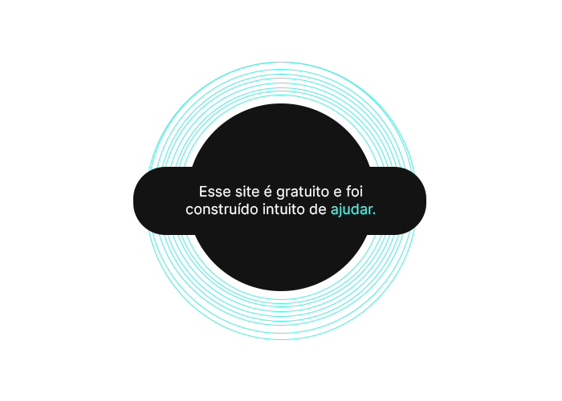

Home
De um Bipolar para a
Bipolaridade.
Uma curadoria dos melhores conteúdos de bipolaridade para ajudar outros bipolares.

Pra quem acabou de descobrir a Bipolaridade.
O que é bipolaridade?
Como a bipolaridade afeta o humor?
Como identificar a bipolaridade?
Bipolaridade e Higiene do Sono
Família e Bipolaridade
O que é um episódio maníaco?
O que é um episódio depressivo?
O que é um episódio misto?
Bipolaridade e Psicose
Como lidar com a Bipolaridade
Ciclotimia e Bipolaridade
A diferença entre o tipo 1 e 2.
Alimentação e Bipolaridade
Atividade física e Bipolaridade